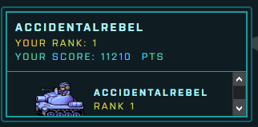

TLDR: Participated in a blue team CTF, had a lot of fun, looking forward for more
Yesterday I participated in the GuideM "Hunt the Kingdom" CTF challenge. It served as the final activity at the end of the "Cyber Defense and Threat Hunting" course.
I was looking forward to this CTF, especially after my awesome experience with the Red Team Village CTF at Defcon. This one is centered on the Blue Team side, and I was curious as to how it will play out.
The Preparation
I took one whole day to study and prepare. I went through all our slides and have written down the important concepts and commands to an org file. This is important because I wanted them to be easily searchable, which helped a lot during the challenge.
I also did research about the Hunt the Kingdom challenge itself. There weren't much information online about it but there were some social media posts that contained screenshots on how the challenge looked like. These gave me a lot of information on what to expect.

It's OSINT in practice :P
For example, with the screenshot above I learned how the UI looked like, that there were categories that we could switch to, leaderboards, how a question is structured, and that "areas" on the map can get added, enabled, and disabled during the game. The last part is particularly important as it means that not all questions are available from the start and some can get disabled during the game.
Thanks to the above research I felt confident that I could hit the ground running as soon as the game started. I picked my name (AccidentalRebel, of course) and my emblem and I was ready for the hunt.

Yes, that's the blue tank from Advance Wars, because I'm part of the "blue team".
The Hunt
When the hunt started my approach was to focus on the easy problems first. Getting them out of the way early would allow me to rack up points and just focus on the hard ones afterwards. This did the trick and I was able to maintain an early lead.
During the mid-game my computer hanged from all the switching between VMs (There were 3 VMs that we needed to use to solve the problems). Note to self: get a beefier PC. I got a bit frustrated by this but decided that instead of waiting for Windows to boot I could use the time to take a break and got lunch.

I came back to the game all full and refreshed, but sadly, I have already lost my lead. I felt a bit disappointed by this but I continued to push through. I removed the leaderboards to minimize distractions which helped. No need to pressure myself, I told myself. Although, I admit that I did peek from time to time.
With the renewed focus I was able to keep my standing in the top 3. The leader of the pack during the end-game was BoyHack3r, a worthy opponent who was always a few points ahead of me.
There was one question that has a lot of points that only has one solve. I knew that if I could get that it would give me enough points to snatch back 1st place. It wasn't an easy problem though so I changed my approach by slowing down which helped me understand the questions better. A few minutes later I was back at first place.
I've never done a celebratory fist pump before, this was the first time.
The Final Minutes
I was able to maintain first place position by continuously answering questions until I was left with just four questions. These four are problems that no one has solved yet. The activity on the leaderboards have lessened which I took to mean that the others were stuck like me. I was at 13740 points, BoyHack3r at 13590, and Overwatch at 13460. If any of them managed to solve just one out of these four problems then they'll easily overtake me.
I wasn't going to let that happen though. At 5 minutes left I continued solving the one that I had the most progress with. But it wasn't enough and I ran out of time. The others didn't get their lucky break either which finally cemented the scores on the boards.

After 6 hours of back-breaking hunting I was finally able to breathe a sigh of relief.
The End
I rarely engage in any competitive activity so my competitive side rarely comes out. This CTF definitely brought it out and gave me the push to take the challenge seriously. I didn't do it for the prizes though. I did it because I wanted to prove to myself that I have what it takes, especially since I don't have a formal background in CyberSecurity. While a CTF is not an accurate qualification of being part of a blue team, it does show a participant's ability to work and solve problems under pressure.
I want to give a shoutout to GuideM for guiding us throughout the course and for the extremely fun CTF challenge. Also to BoyHack3r, Overwatch, and :] for making me sweat bullets.
This is another big step for me into the world of cybersecurity and I do hope I could learn more and improve. I look forward to the next CTF!
If you enjoy blue team challenges, see my detailed walkthrough of the Cyber Corp Case 2 threat hunting challenge.